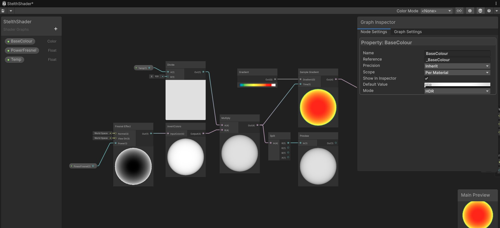
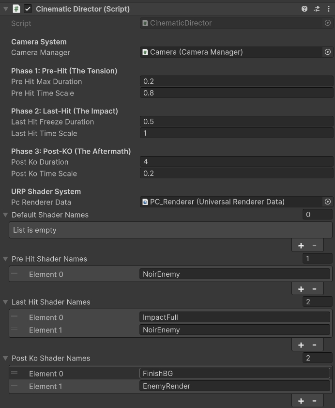
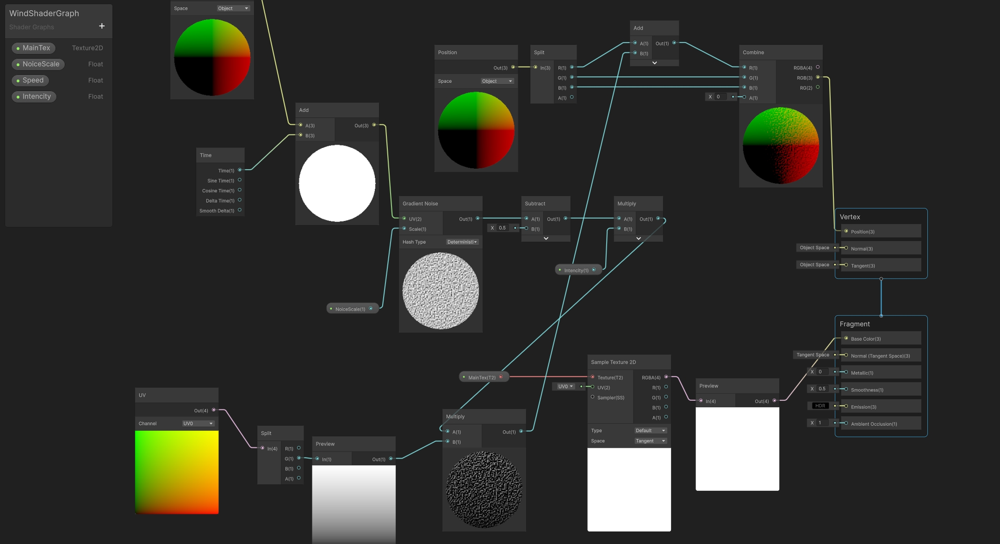

Shader Development Showcase
A collection of custom rendering solutions and Shader Graph implementations built to enhance visual feedback, optimize performance, and drive core gameplay mechanics.
Thermal Vision (X-Ray)
Developed specifically for the gunner role in an asymmetric multiplayer setup. This full-screen post-processing shader translates object tags and world data into a high-contrast thermal image. It features an X-ray effect that allows the player to spot enemy heat signatures dynamically through physical cover and walls, providing a crucial tactical advantage.
🎮 See it in action: Rotor Warfare
Sobel Outline Shader
To achieve a striking, comic-book aesthetic for intense melee combat, I built a custom Sobel filter edge-detection shader. It analyzes scene depth and normal data to draw thick, stylized outlines around characters and environmental hazards, vastly improving visual readability during chaotic, fast-paced brawls.
🎮 See it in action: Knuckle

Impact Frame Shader

Designed to give heavy attacks a devastating sense of weight. This shader overrides standard materials during hit-stop (time freeze) moments, flashing the screen with high-contrast, stylized impact colors. It works in tandem with the combat animation state machine to maximize the "punchiness" of physical hits.
🎮 See it in action: Knuckle
2D Wind Shader
A lightweight vertex displacement shader created to breathe life into 2D environments. By manipulating the vertices of sprite assets using time and noise nodes, this shader simulates organic, rolling wind effects on foliage and cloth without the need for expensive physical simulations or skeletal animations.
🎮 See it in action: Lumen